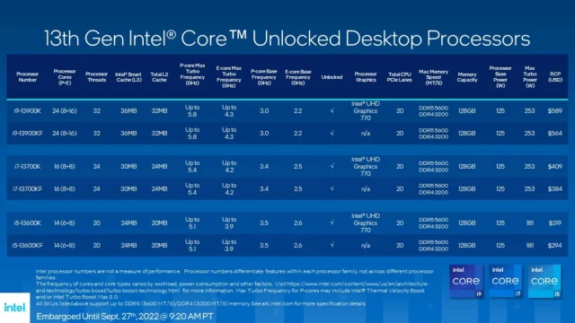

-Thurs, 23 June, 2022
Intel announced its latest generation of processors earlier this week, the 13th-Gen Intel Core family. The head of that family is the new Intel Core i9-13900K, which Intel describes as the “world’s fastest desktop processor” with a clock speed up to 5.8GHz. It and five other unlocked desktop chips (the top-end “K” processors) are kicking off the launch of the 13th-Gen Core family, which will include 22 total processors. The “K” chips will be available starting on October 20, 2022.
The 13th-Gen chips are built on a matured version of the Intel 7 process, according to the company, and they’ll provide up to 15 percent better single-threaded performance than the previous generation. Even more impressive is multi-threading performance, which will be up to 41 percent better thanks to a higher number of Efficient-cores (E-cores) across the board—up to twice that of the 12th-Gen chips. The new processors support DDR5 memory (5600MHz and 5200MHz) as well as DDR4 memory, and offer up to 16 PCIe Gen 5.0 lanes. The chips also boast a bigger L2 and L3 cache.
To support the new chips, Intel also announced the new Intel 700 chipset—though the 13th-Gen chips will also be compatible with existing Intel 600 chipset-based motherboards.
“We are raising the standards of PC performance once again with our latest generation of flagship 13th-Gen Intel Core Processors,” said Michelle Johnston Holthaus, executive vice president and general manager of the Client Computing Group at Intel, in a news release.
OneRaichu didn’t clarify whether the processor in question would be the Core i9-13900K or the Core i9-13900KS. The recently released Core i9-12900KS maxes out at 5.5GHz in the P-core boost clock, so adding 300MHz to that brings it to an impressive 5.8GHz. Considering that the number of performance cores is likely to remain unchanged from the current generation, adding some power to the clock makes good sense.
Although the upcoming Raptor Lake processors will undoubtedly be better than current-gen Alder Lake, it’s hard not to wonder about the power requirements of such a chip. Intel CPUs are already quite power-hungry: The Core i9-12900KS required 260 watts of power to run at its maximum boost clock. As Wccftech points out, it’s not outlandish to assume that Raptor Lake might bring that number up to 300 watts.
Both Intel and AMD are set to release new processors this year, so it’s going to be an exciting time for CPU shopping. Intel Raptor Lake and AMD Ryzen 7000 will likely hit the stores in the latter half of the year.